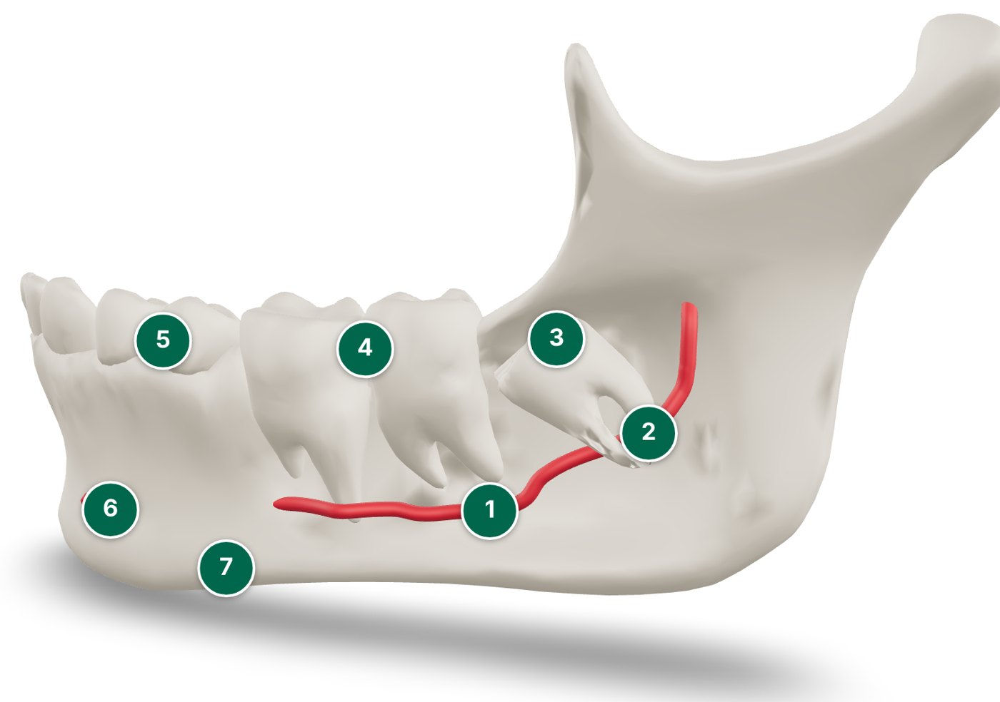
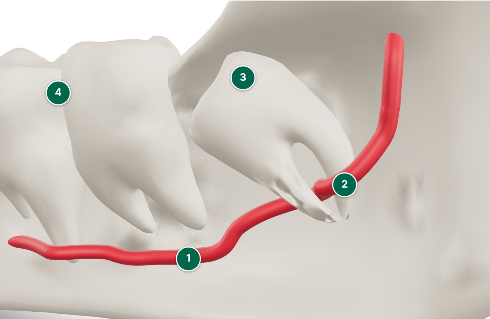
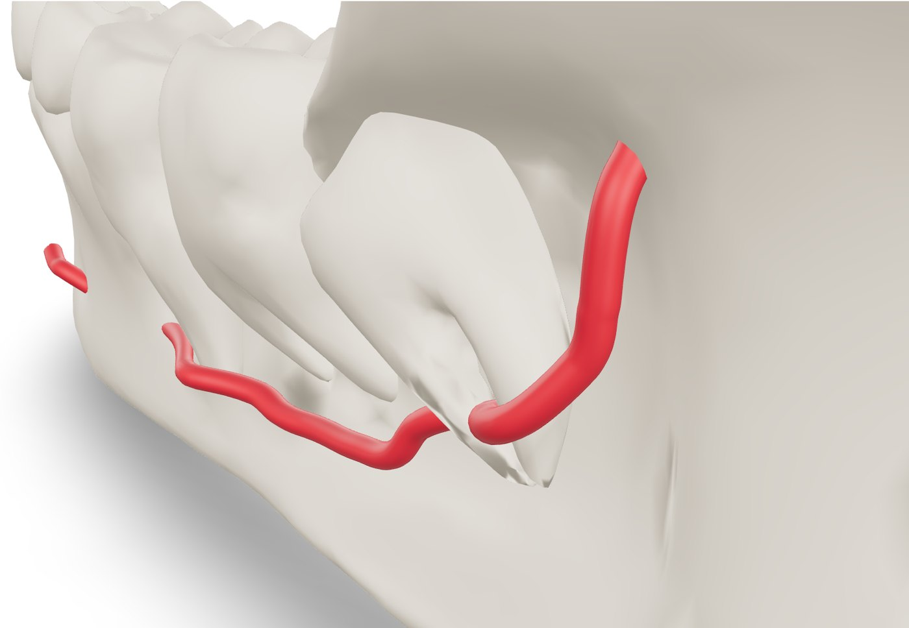
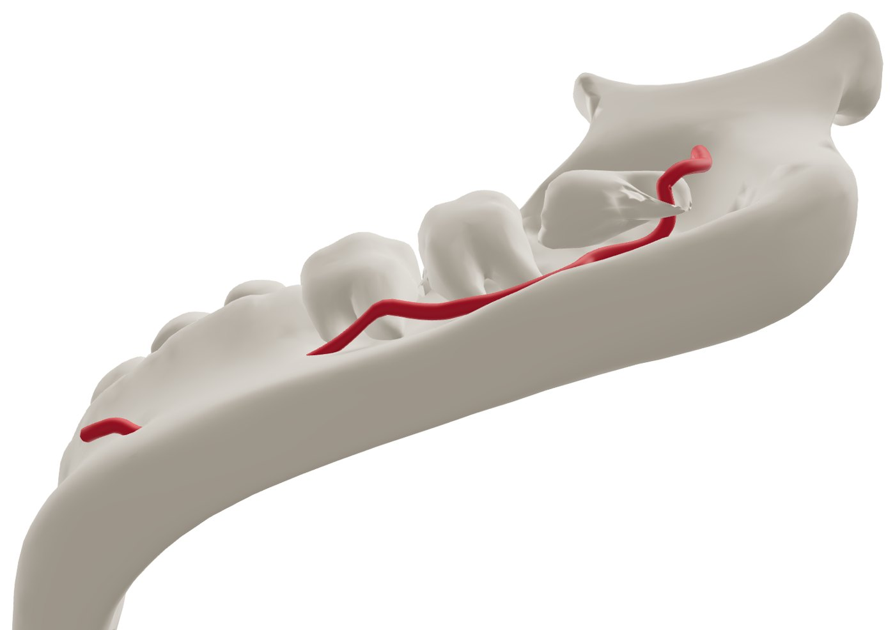

Impacted lower wisdom tooth and the nerve near it


- Jaw bone and teeth
- Nerve, artery and vein (in their canal)
Parts of the model
- 1Jaw nerve (inferior alveolar nerve)
- 2Roots of the wisdom tooth
- 3Wisdom tooth (third molar)
- 4First and second molars
- 5First and second premolars
- 6Chin nerve (mental nerve)
- 7Jaw bone (mandible)


What is the problem?
The wisdom tooth is the last tooth at the back. Its other name is the third molar. An impacted lower wisdom tooth is stuck under the gum and bone. It has not come through the gum (it is unerupted). It cannot grow in the right way.
The nerve
A nerve runs in a tube of bone inside the lower jaw. Here it is called the jaw nerve. Its medical name is the inferior alveolar nerve. Two blood vessels run with it in the same tube. They are the inferior alveolar artery and vein.1
The jaw nerve is a branch of the trigeminal nerve, the main nerve of feeling in the face. It comes from the lowest of its 3 main parts, the mandibular division. The nerve, artery and vein go into the jaw bone through a hole on the tongue side. This hole is the mandibular foramen.1
The jaw nerve gives feeling to the lower teeth and gums on the same side.2 Near the front of the jaw, a branch of it comes out of the bone through a small hole. This branch is the chin nerve (mental nerve). It gives feeling to the lower lip and chin.3
The tongue gets its feeling from a different nerve, the lingual nerve. It can also be hurt when a wisdom tooth is taken out.4 Lasting damage to it is rare. It happens to about 1 to 3 in 1,000 people.5 The tongue nerve is not shown in this model.
In this model, the roots of the wisdom tooth wrap around the nerve and artery.
Why taking the tooth out can hurt the nerve
To take the tooth out, the roots must come out of the bone. The roots curve around the nerve. So the nerve can be pressed, stretched or cut as the roots come out. The artery and vein can also be hurt and bleed.1
If the jaw nerve is hurt, the chin nerve may also stop working well. This is because it is a branch of the jaw nerve.3
What nerve damage feels like
The lower lip, chin, teeth or gums on that side may feel numb, tingle, feel strange or hurt.24
Short-term: the feeling comes back, most often within weeks to months. Long-term: the feeling does not fully come back.2
In older people, the risk is higher and the feeling is less likely to come back fully.26
How often does it happen?
Some wisdom teeth have roots close to the nerve. A review of 16 studies looked at these teeth. Rates vary, but for these teeth:7
 About 7 in 100may get nerve damage after the whole tooth is taken out
About 7 in 100may get nerve damage after the whole tooth is taken out About 1 in 100may have nerve damage that does not go away
About 1 in 100may have nerve damage that does not go awaySources
- Juodzbalys G, Wang HL, Sabalys G. Anatomy of mandibular vital structures. Part I: mandibular canal and inferior alveolar neurovascular bundle in relation with dental implantology. J Oral Maxillofac Res. 2010;1(1):e2. doi.org/10.5037/jomr.2010.1102
- Sarikov R, Juodzbalys G. Inferior alveolar nerve injury after mandibular third molar extraction: a literature review. J Oral Maxillofac Res. 2014;5(4):e1. doi.org/10.5037/jomr.2014.5401
- Juodzbalys G, Wang HL, Sabalys G. Anatomy of mandibular vital structures. Part II: mandibular incisive canal, mental foramen and associated neurovascular bundles in relation with dental implantology. J Oral Maxillofac Res. 2010;1(1):e3. doi.org/10.5037/jomr.2010.1103
- Renton T, Yilmaz Z. Profiling of patients presenting with posttraumatic neuropathy of the trigeminal nerve. J Orofac Pain. 2011;25(4):333-344. PMID 22247929. pubmed.ncbi.nlm.nih.gov/22247929
- Lee J, Feng B, Park JS, et al. Incidence of lingual nerve damage following surgical extraction of mandibular third molars with lingual flap retraction: a systematic review and meta-analysis. PLoS One. 2023;18(2):e0282185. doi.org/10.1371/journal.pone.0282185
- Queral-Godoy E, Valmaseda-Castellón E, Berini-Aytés L, et al. Incidence and evolution of inferior alveolar nerve lesions following lower third molar extraction. Oral Surg Oral Med Oral Pathol Oral Radiol Endod. 2005;99(3):259-264. doi.org/10.1016/j.tripleo.2004.06.001
- Rico-Barroso L, Barroso-Medel M, Gutiérrez-Pérez J, et al. Coronectomy as an alternative technique to complete extraction of mandibular third molars with risk of nerve injury. Med Oral Patol Oral Cir Bucal. 2026;31(1):e19-e30. doi.org/10.4317/medoral.27459
This sheet is for a research study at Nagoya University. Version 2.0, 20 October 2026.